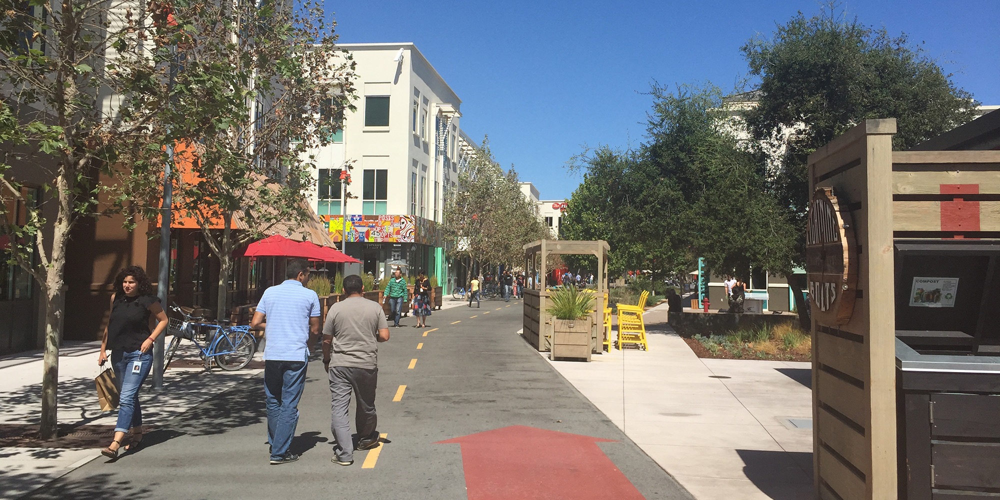
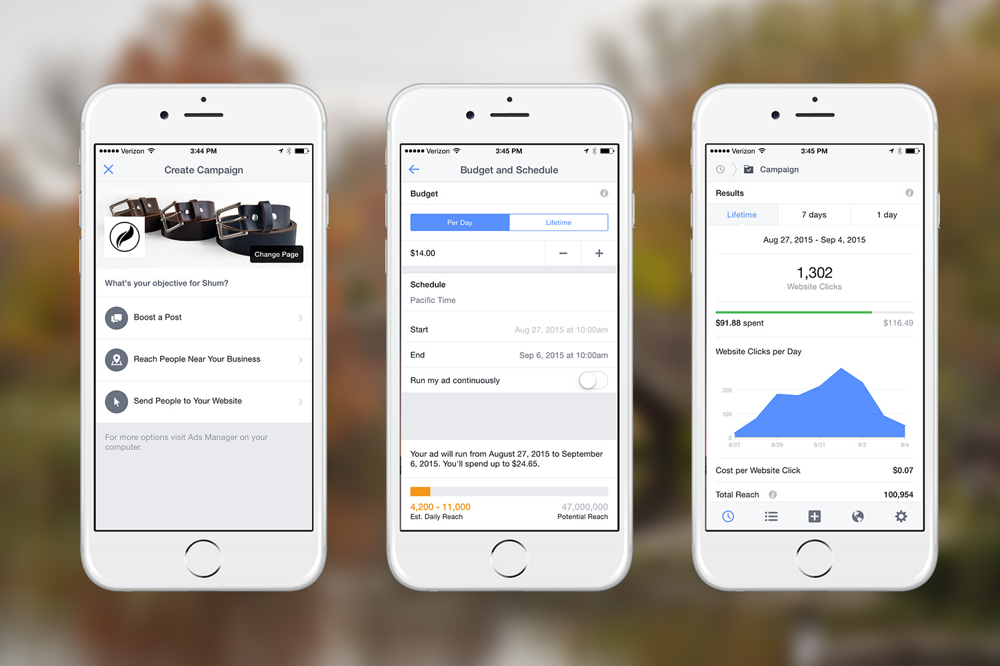
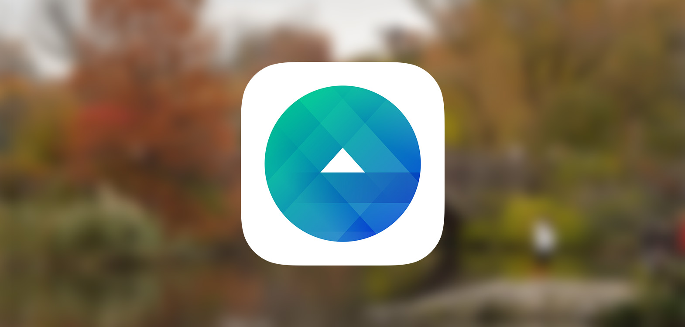

During the summer 2015, I worked at Facbeook as a Product Design Intern. I worked on the Facebook Ads Manager mobile app team, helping design and improve user interfaces and experiences within the app. This internship was an invaluable learning experience in product design. Working closely with other designers, product managers, and engineers, I learned a great deal in visual and interface design as well as learning to communicate and present designs effectively.

Facebook Ads Manager is an app for Android and iOS that allows people to manage ad campaigns on Facebook. People can quickly set up ads on Facebook with just a few simple steps. They can also easily edit parameters, like audience and budget, for existing campaigns. And of course, the app also allows people to view campaign analytics and results. The app is a lightweight version of the Ads Manager on desktop web.
